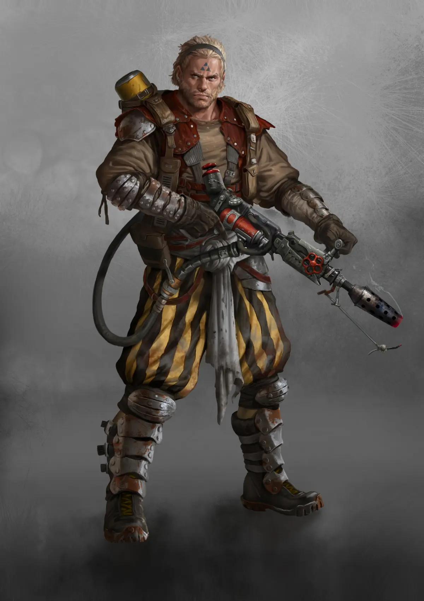

Leaders
- 8 Baptists
- Altair
- Amos
- Nuntius
- Orphid
- Trachees
- 3 Unnamed Baptists
CULT DOSSIER
Torchbearers in Paradise
+1 to maximum skill level

THE CULT
The Anabaptists believe the world is Paradise corrupted by the Demiurge. Matter is imperfect, the body is a prison, and the divine Pneuma within humanity longs to escape it. Psychonauts and the Sepsis are proof that the Demiurge still poisons creation. Against this corruption, the Anabaptists offer work, faith, community, and war.
Ascetics reclaim poisoned soil, restore fields, build irrigation, and feed settlements. Orgiastics defend those gains with swords, flails, Spitfires, and overwhelming violence. One half of the Cult tries to make Paradise bloom again while the other burns away what belongs to the Demiurge. Together they see themselves as participants in humanity's final battle.
The Cult began with Rebus the Baptist, a wandering seeker who rejected surviving religions as incomplete or man-made. His search led him to the Neognosis, an ancient Gnostic teaching built around the opposition between divine spirit and corrupt matter. God is Pneuma—pure insight and spirit—while the Demiurge is bound to the physical world. Humanity is divine breath trapped within flesh.
Death can free the Pneuma, but only enlightenment allows it to find its way back to the divine source. Contemplation, hardship, and insight are therefore preparation for liberation.
Rebus also armed farmers with hoes, spades, pikes, and pitchforks and taught them to reclaim poisoned land. His followers restored fields, defended communities, and spread throughout Borca. In 2148 they seized the cathedral that became Cathedral City, driving out the Chroniclers and making it the center of their faith.
Two centuries later, the appearance of Psychonauts seemed to vindicate Rebus' prophecies. The Cult identified the Aberrants as servants of the Demiurge and embraced a final war against them. From then on, Rebus' host called itself the Anabaptists.
The Cult follows two complementary paths. Ascetics seek transcendence through labor, deprivation, meditation, and self-denial. They till fields, repair the land, build aqueducts, and suppress bodily desire, treating physical need as another chain forged by the Demiurge.
Orgiastics confront carnality through excess, violence, passion, and battle. They guard settlements, hunt Psychonauts, and smash enemies with weapons descended from the tools of Rebus' first farmers. Elysian oils sharpen their senses, dull pain, or drive them into terrifying aggression.
Ascetics overcome the body by denying it; Orgiastics exhaust and transcend it through excess. Their methods differ, but both believe the Pneuma must triumph over flesh.
People are drawn to the Anabaptists by their fields, food, protection, and fierce sense of family. Newcomers are called Touched and spend a season learning the Cult's ways under a senior Anabaptist. Those who remain are baptized, take the nose ring symbolizing bondage to the body, and receive three tattooed marks upon the forehead.
Advancement requires more than usefulness. Devoted Anabaptists search for the Seed, Rebus' image for the first spark of divine insight. Through labor, battle, meditation, pain, or revelation, some experience emanations—visions, voices, intuitions, and other signs believed to reveal proximity to the Pneuma.
The Council of Emanations examines these experiences and judges their meaning. Emanations shape status within the Cult, but certainty is impossible. Genuine mystics, self-deceivers, and gifted liars may all stand before the Council.
Those who commit themselves become Ascetics or Orgiastics. Exceptional Ascetics may become Elysians, masters of plants, medicine, the Sepsis, and sacred oils. Distinguished Orgiastics may become Furors, champions trusted with the Cult's forbidden arsenals and weapons such as the Spitfire.
Emissaries carry the Baptists' will beyond Cathedral City, negotiate with other powers, and organize campaigns. Counselors lead the Council of Emanations and stand among the likely successors to the Cult's highest office.
Eight Baptists lead the Anabaptists. Each commands thousands and helps determine the Cult's course, yet they are expected to lead by example. Former Orgiastics still take up swords; former Ascetics still put their hands to the plow. Behind their united public face, the Baptists do not always agree.
Sublimes stand outside this normal progression. Recognized as living manifestations of prophecy, they can inspire thousands to crusade with a word. Some become Acherons, sacrificing their own hope of Paradise by using forbidden powers derived from Burn and Sepsis against the Demiurge.
Elysian oils are among the Cult's greatest treasures. Their names come from the four rivers of Paradise: Perat, Hiddekel, Gehon, and Pischon. Elysians gather roots, bark, herbs, seeds, and spices, then press and refine them according to recipes attributed to Rebus.
Perat sharpens faith and perception. Hiddekel awakens aggression and reaction. Gehon suppresses weariness and pain while strengthening concentration. Pischon, rare and jealously guarded, is associated with revelation and the highest ranks.
Two forbidden rivers also exist: Styx and Acheron. Both are produced with Burn. Styx lets its user endure terrible wounds before exacting a brutal price. Acheron opens perception toward the Psychonauts, exposing spore fields and Aberrants while infesting the user in return. Some Anabaptists will embrace the Demiurge's corruption to destroy more of it.
Psychonauts are Spawn of the Demiurge, while spore fields and the Sepsis are wounds in Paradise that must be cut out or burned away. Ascetics reclaim the ground afterward so corrupted land can again support human life.
Their alliance with the Spitalians grows from this common enemy. The two Cults disagree about the Sepsis, yet both destroy spore fields and fight Psychonauts. Anabaptists consider Spitalian science spiritually misguided but useful.
Apocalyptics are despised for Burn. Chroniclers were ancient enemies driven from Cathedral City, although truces have become possible. The deepest hatred is reserved for the Jehammedans. Centuries of raids, atrocities, conversion, and war have scarred both Cults, particularly around the Adriatic. Exhaustion has sometimes produced uneasy quiet, but peace rests over old hatred like a thin crust.
Anabaptist strength comes from more than faith. Their aqueducts bring water to settlements, their fields produce food, their labor restores ruined land, and their fighters defend communities. For many ordinary people, theology matters less than having brothers and sisters who will harvest beside them and fight when danger comes.
That success also makes the Cult a political power. Emissaries negotiate in councils, settlements depend upon Anabaptist water, and populations can be drawn into Cathedral City's orbit. Serving Paradise does not prevent wars, suppression of rivals, or territorial ambition.
Anabaptists are builders and destroyers, mystics and laborers, healers and berserkers. Their faith can produce generosity, courage, endurance, and fellowship, but the same certainty can turn disagreement into heresy and war into sacred duty.
Their central tension lies between spirit and matter. The body is a prison, yet it must work, fight, suffer, and survive long enough to restore Paradise. The Sepsis is corruption, yet forbidden Anabaptists may use Burn to fight it. Emanations are signs of enlightenment, yet no one can prove every vision true. The eight Baptists speak with one voice before the Cult even while disagreeing behind closed doors.
Every Anabaptist is asked to cultivate something: a field, a community, or the Seed within. At the same time, each must decide what deserves to be uprooted and burned so that Paradise can grow in its place.
THE PATH OF THE SEED
Select a rank in the hierarchy to read its complete entry.
GIFTS OF THE PNEUMA
TOOLS OF PARADISE
Open or close each equipment group to focus the reference.